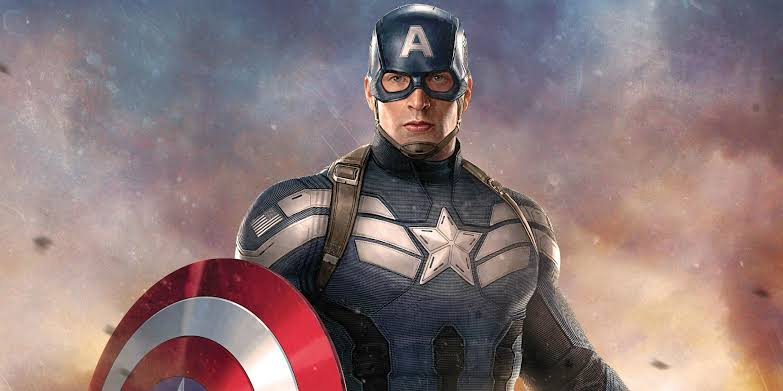
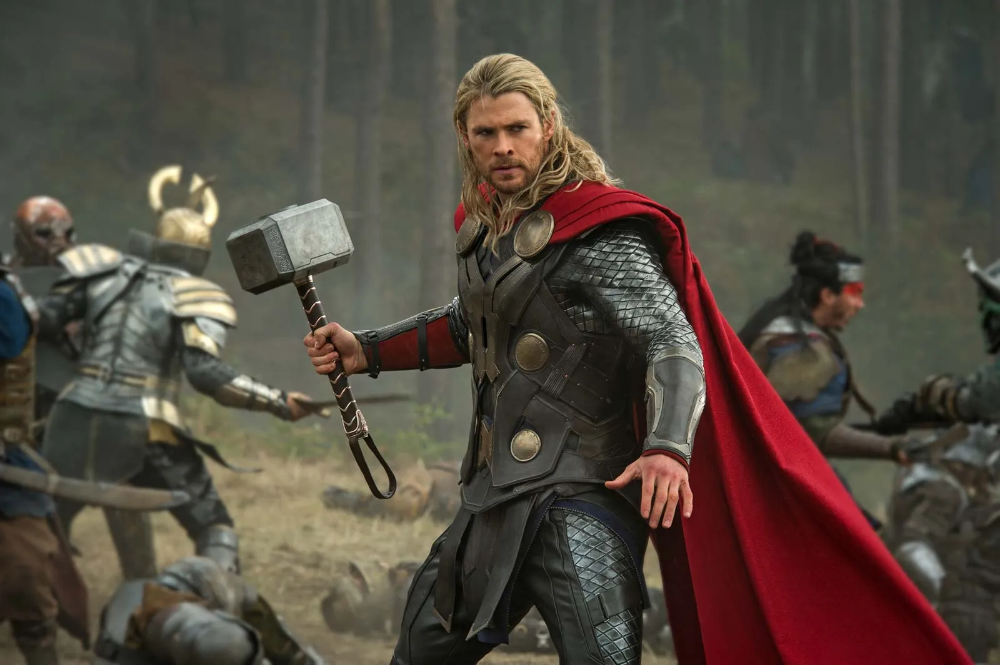
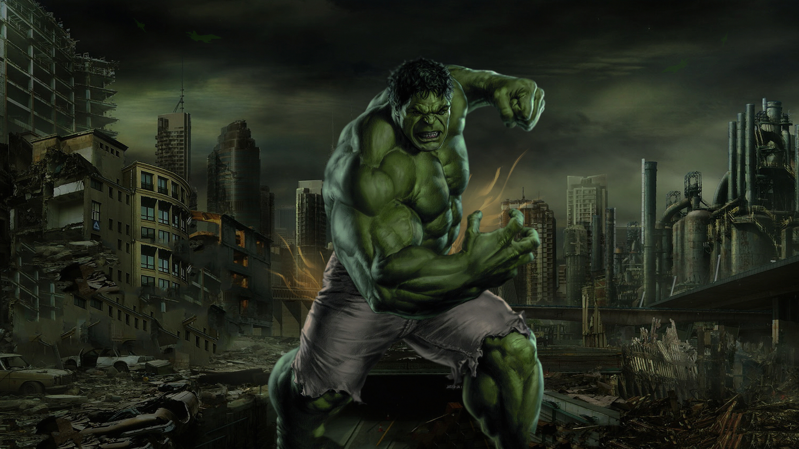

An Earth's Mightiest Heroes Dossier
Classified S.H.I.E.L.D. Strategic Archives // Level 7 Clearance Required
Originally formulated in 1995 by Director Nick Fury following the emergence of extraterrestrial threats (the Kree-Skrull war), the "Protector Initiative" was renamed the "Avengers Initiative" after Captain Carol Danvers' Air Force callsign, "Avenger." The core strategic objective was to bring together an elite strike group of extraordinary individuals whose combined capabilities exceeded standard military forces, mobilized to neutralize extinction-level events.
"There was an idea, Stark knows this, called the Avengers Initiative. The idea was to bring together a group of remarkable people, see if they could become something more. See if they could work together when we needed them to fight the battles that we never could." — Director Nick Fury
Real Identity: Anthony Edward "Tony" Stark
Portrayed By: Robert Downey Jr.
MCU Debut: Iron Man (2008)
Operational Classification: Human / Industrial Prodigy / Technological Vanguard
Billionaire industrialist and CEO of Stark Industries, Tony Stark revolutionized military weaponry before being captured by the Ten Rings terrorist group in Afghanistan. To survive shrapnel entering his heart and escape captivity, he engineered the miniaturized Palladium Arc Reactor and the crude Mark I armor. Upon returning, he shuttered Stark Industries' weapons division and dedicated his engineering prowess to global protection.
Notable Quotes:
"Genius, billionaire, playboy, philanthropist." (2012)
"I told you: 3,000." (2019)
"And I... am... Iron Man." (2019)

Real Identity: Steven Grant Rogers
Portrayed By: Chris Evans
MCU Debut: Captain America: The First Avenger (2011)
Operational Classification: Enhanced Super-Soldier / Field Commander
Rejected repeatedly from military service during World War II due to various health conditions, Brooklyn-born Steve Rogers was selected for Project Rebirth by Dr. Abraham Erskine because of his moral character and unwavering resolve. Transformed by the Super-Soldier Serum and Vita-Rays, Rogers led the Howling Commandos against the scientific division of the Third Reich, HYDRA, led by the Red Skull. After crashing the Valkyrie super-bomber into the Arctic ice shelf to save New York, he spent nearly 70 years in cryostasis before being recovered in the 21st century.
Notable Quotes:
"I don't like bullies; I don't care where they're from." (2011)
"The price of freedom is high. It always has been. And it's a price I'm willing to pay." (2014)
"Avengers... assemble." (2019)

Real Identity: Thor Odinson
Portrayed By: Chris Hemsworth
MCU Debut: Thor (2011)
Operational Classification: Asgardian Deity / Cosmic Protector
The crown prince of Asgard and son of Allfather Odin, Thor initially possessed immense arrogance, which provoked an unsanctioned raid into Jotunheim and caused his banishment to Earth as a mortal without powers. By sacrificing himself to protect a small New Mexico town from the Destroyer automaton, Thor proved himself worthy of his hammer Mjolnir once more. He subsequently became Earth's most powerful celestial defender while grappling with the loss of his mother Frigga, father Odin, brother Loki, and his homeworld Asgard.
Notable Quotes:
"Your ancestors called it magic, but you call it science. I come from a place where they are one and the same." (2011)
"Bring me Thanos!" (2018)

Real Identity: Dr. Robert Bruce Banner
Portrayed By: Edward Norton / Mark Ruffalo
MCU Debut: The Incredible Hulk (2008) / The Avengers (2012)
Operational Classification: Gamma-Mutated Transformed Titan / Master Physicist
Commissioned by General Thaddeus "Thunderbolt" Ross at Culver University to bio-engineer radiation resistance (a clandestine revival of WWII's Super-Soldier program), Dr. Banner subjected himself to excessive gamma-ray exposure. The resulting mutation birthed a towering alter ego driven by rage, adrenaline, and primal survival instincts. After spending years off the grid trying to control his elevated pulse, Banner joined S.H.I.E.L.D. to locate the Tesseract and later balanced the dual identities into "Smart Hulk" inside a gamma laboratory during the five-year Blip.
Notable Quotes:
"That's my secret, Cap: I'm always angry." (2012)
"Puny god." (2012)
"It's like I was made for this." (2019)

Real Identity: Natalia Alianovna "Natasha" Romanoff
Portrayed By: Scarlett Johansson
MCU Debut: Iron Man 2 (2010)
Operational Classification: Espionage Specialist / Covert Infiltrator / Combat Martial Artist
Orphaned at a young age in the Soviet Union, Natasha was inducted into the clandestine Red Room program under General Dreykov, where she endured brutal psychological conditioning, tactical education, and involuntary sterilization. Targeted for elimination by S.H.I.E.L.D., agent Clint Barton chose to spare her life instead, facilitating her defection to the West. She subsequently served as one of S.H.I.E.L.D.'s premier covert operators before working as Tony Stark's undercover legal aide and stepping forward as an original Avenger.
Notable Quotes:
"I've got red in my ledger, I'd like to wipe it out." (2012)
"She's not alone." (2018)
"Whatever it takes." (2019)

Real Identity: Clinton Francis "Clint" Barton
Portrayed By: Jeremy Renner
MCU Debut: Thor (2011, cameo) / The Avengers (2012)
Operational Classification: Master Marksman / Tactical Scout / Covert Assassin
A master archer with unmatched hand-eye coordination and precision, Clint Barton joined S.H.I.E.L.D. as an elite sniper and field agent under Nick Fury. Often stationed on perimeter defense and long-range surveillance, Barton became the moral center and steady anchor of the team. Following the sudden dusting of his entire family during Thanos's Decimation in 2018, Barton was consumed by grief and adopted the lethal identity of Ronin, hunting down and executing cartel and Yakuza syndicates across Mexico and Japan.
Notable Quotes:
"You step out that door, you are an Avenger." (2015)
"The city is flying, we're fighting an army of robots, and I have a bow and arrow. None of this makes sense." (2015)
"Don't do that. Don't give me hope." (2019)
Following the final victory over Thanos, the original assembly officially disbanded, leaving behind a new generation of defenders:
Document maintained strictly using semantic basic HTML.
Return to Top of Document